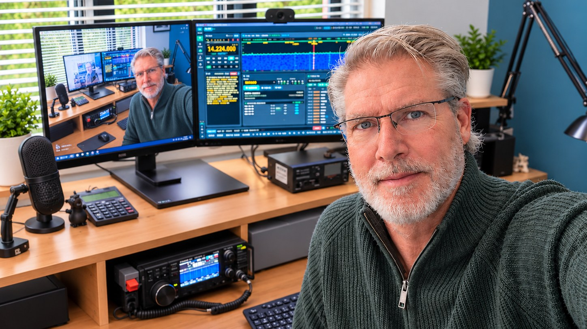
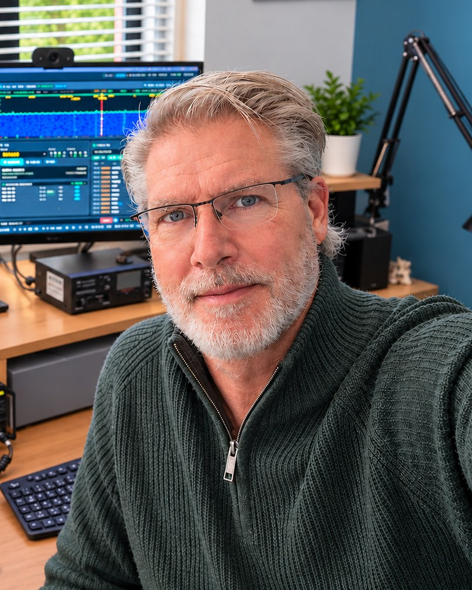
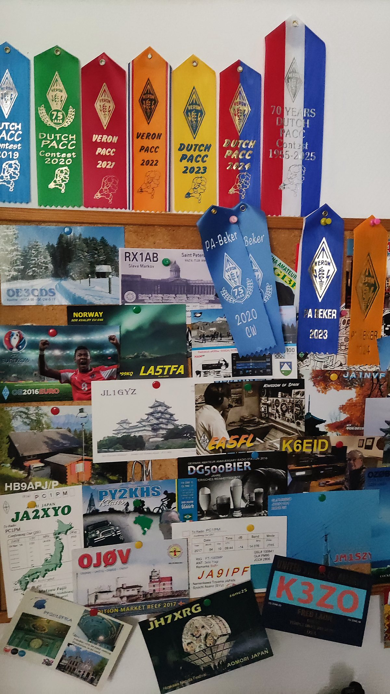

Radios
- Icom IC-7300HF/50 MHz SDR transceiver, main rig
- Icom IC-7000HF/VHF/UHF

Peter Mulder · The Netherlands · licensed since 2016
About me
Thanks for looking me up. I've been a licensed operator since June 2016, but long before that I spent many hours listening on the HF bands.
Today you'll find me on HF in CW, SSB and digital modes (FT8/FT4, RTTY and SSTV), and I really enjoy a good contest – whether from home or with a team at a field day.
I hope to work you sometime (again)! 73 de PC1PM

Loading live space weather from NOAA… (JavaScript required)
Station
Contests & field days
The Dutch PACC Contest, organised by VERON, is my favourite. I finished third three times in the Single Operator Mixed Low Power category.


More about the PACC: pacc.veron.nl
QSL
I confirm contacts via LoTW and the QRZ Logbook.
On the wall hangs a nice collection of paper cards from Japan, the USA, Brazil, Norway, Russia and more.

New to radio?
What is amateur radio, how do SSB, CW and FT8 work, and why is shortwave so unpredictable? Plus live band conditions and my latest contacts.
Homebrew
Mz Cw Reader, a CW decoder for Windows, and QSO Master Pro CW for CW, RTTY and contesting. See what they can do.